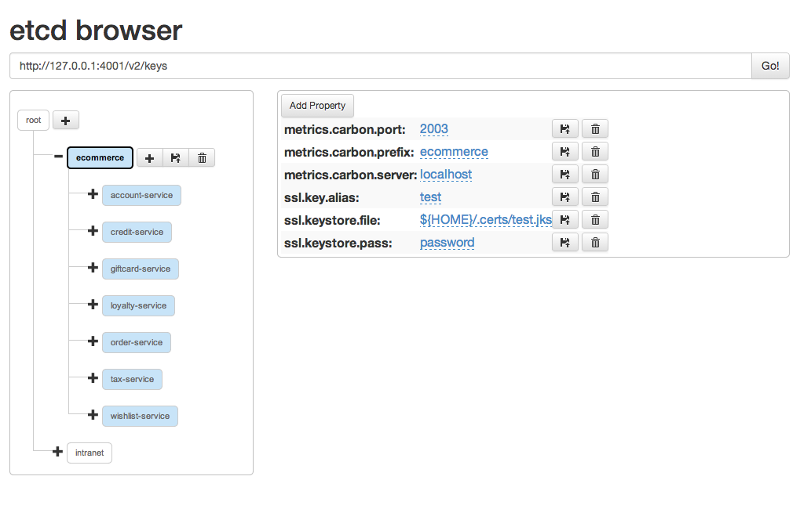

Creating a functionnal CoreOS cluster
units template : mongodb@.service
[Unit]
Description=MongoDB
After=docker.service
[Service]
ExecStartPre=/usr/bin/docker pull mongo:latest
ExecStartPre=-/usr/bin/docker rm -f -v %p.%i
ExecStart=/usr/bin/docker run --rm --name %p.%i -p 27017:27017 \
--volume=/home/data/mongo/latest:/data/db
--cpu-shares=4 -m="30g"
mongo:latest
ExecStartPost=/bin/etcdctl set /skydns/fr/mycloud/%p/%i '{"host":"%H", "port":27017}'
ExecStartPost=/bin/etcdctl set /databases/%p/%i '{"host":"%H", "port":27017}'
ExecStop=/bin/etcdctl rm /skydns/fr/mycloud/%p/%i
ExecStop=/bin/etcdctl rm /databases/%p.%i
ExecStop=-/usr/bin/docker stop %p.%i
Restart=always
[X-Fleet]
Conflicts=%p@*
MachineMetadata=disk=ssd
Simple command line
fleetctl submit mongodb@.service
fleetctl start mongodb@x1
fleetctl start mongodb@x2
fleetctl start mongodb@x3
fleetctl list-units
fleetctl journal -f mongodb@x1
coreos:
fleet:
public-ip: $public_ipv4
metadata: disk=ssd,hoster=ovh,location=FR
http://thesecretlivesofdata.com/raft/
Access anywhere
# Use it via command line
> etcdctl set /skydns/fr/mycloud/mongodb/x1 {"host":"core-1", "port":27017}
# Or HTTP
> curl -L http://127.0.0.1:4001/v2/keys/skydns/fr/mycloud/mongodb/x1
{"host":"core-1", "port":27017}
coreos:
etcd:
# generate a new token for each unique cluster from https://discovery.etcd.io/new
discovery: https://discovery.etcd.io/{token}
addr: $public_ipv4:4001
peer-addr: $public_ipv4:7001
Or etcd-browser for human beings

dig *.mongodb.mycloud.fr SRV @localhost
[Unit]
Description=SkyDNS
After=docker.service
[Service]
ExecStartPre=-/usr/bin/docker rm -f skydns
ExecStart=/usr/bin/docker run --rm --name skydns \
-e ETCD_MACHINES=http://127.0.0.1:4001 \
-e SKYDNS_ADDR=0.0.0.0:53 \
-e SKYDNS_DOMAIN=mycloud.fr \
-e SKYDNS_NAMESERVERS=8.8.8.8:53,8.8.4.4:53 \
--net=host \
skynetservices/skydns:latest
ExecStop=-/usr/bin/docker stop skydns
Restart=always
[mongodb]
port = 27017{{ range gets "/databases/mongodb/*"}}{{ $server := json .Value }}
servers[] = {{ $server.host }}{{end}}
[Unit]
Description=Confd
Wants=etcd.service
[Service]
ExecStartPre=-/usr/bin/mkdir -p /opt/bin
ExecStartPre=-/usr/bin/wget -N -P /opt/bin https://github.com/kelseyhightower/confd/releases/download/v0.9.0/confd-0.8.0-linux-amd64
ExecStartPre=-/bin/rm /opt/bin/confd
ExecStartPre=-/bin/mv /opt/bin/confd-0.9.0-linux-amd64 /opt/bin/confd
ExecStartPre=-/bin/chmod +x /opt/bin/confd
ExecStart=/opt/bin/confd -backend etcd -node 127.0.0.1:4001 -interval=10
ExecStop=-/bin/kill $(pidof confd)
Restart=always
TCP proxy, load balancing, health check
and mitigation since 1996
http://mycloud.fr:1000
etcdctl set /services/mywordpress.fr/scheme http
etcdctl set /services/mywordpress.fr/hosts/1 1.2.3.4:80
etcdctl set /services/mywordpress.fr/hosts/1 1.2.3.5:80
[Unit]
Description=HA proxy load balancer
After=docker.service
[Service]
ExecStartPre=-/usr/bin/docker rm -f balancer
ExecStart=/usr/bin/docker run --rm --name haproxy \
-e ETCD_NODE=127.0.0.1:4001
--volume /etc/certs:/etc/certs/ \
--net host \
cstpdk/haproxy-confd
ExecReload=/usr/bin/docker exec balancer service haproxy reload
ExecStop=/usr/bin/docker stop balancer
Restart=always
[Unit]
Description=Syncthing
[Service]
ExecStartPre=-/usr/bin/docker rm -f -v syncthing
ExecStartPre=-/usr/bin/docker pull istepanov/syncthing:latest
ExecStart=/usr/bin/docker run --rm --name syncthing \
-p 9080:8080 -p 22000:22000 -p 21025:21025/udp \
-v /etc/syncthing:/home/syncthing/.config/syncthing \
-v /home/data/sync:/home/syncthing/Sync \
istepanov/syncthing
ExecStop=-/usr/bin/docker stop syncthing
Restart=always
Or cadvisor+heapster+fluentd or prometheus
[Unit]
Description=Datadog monitoring
[Service]
ExecStartPre=-/usr/bin/docker rm -f datadog
ExecStartPre=-/usr/bin/docker pull datadog/docker-dd-agent
ExecStart=/usr/bin/docker run --rm --name datadog \
-v /etc/datadog/conf.d:/etc/dd-agent/conf.d \
-v /var/run/docker.sock:/var/run/docker.sock \
-v /proc/mounts:/host/proc/mounts:ro \
-v /sys/fs/cgroup/:/host/sys/fs/cgroup:ro \
-e API_KEY=GET-IT-ON-DATADOG \
--net=host \
datadog/docker-dd-agent
ExecStop=-/usr/bin/docker stop datadog
Restart=always
#cloud-config
coreos:
update:
reboot-strategy: best-effort
group: stable
fleet:
public-ip: $public_ipv4
units:
- name: haproxy.service
command: start
content: |
[Unit]
....
write_files:
-
path: /etc/resolv.conf
owner: root:root
content: |
nameserver 127.0.0.1
nameserver 8.8.8.8
# List of allowed keys for core user
ssh_authorized_keys:
- ssh-rsa AAAAB3NzaC1y